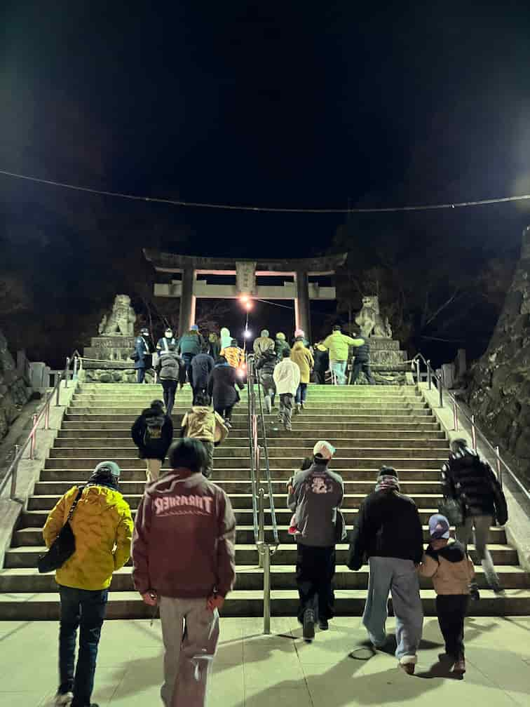
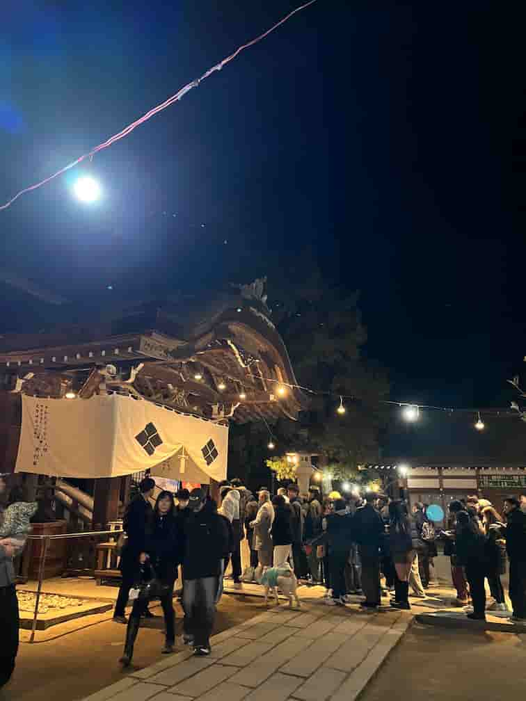
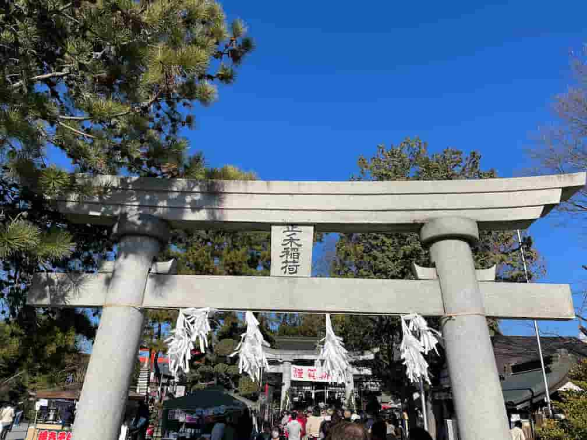
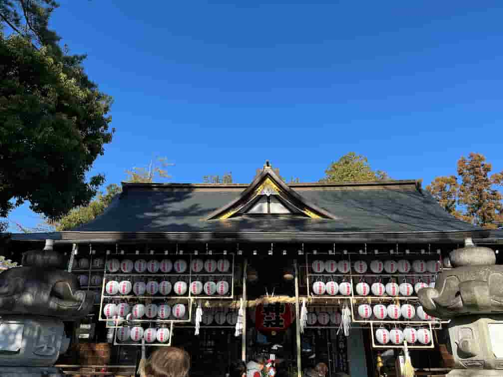
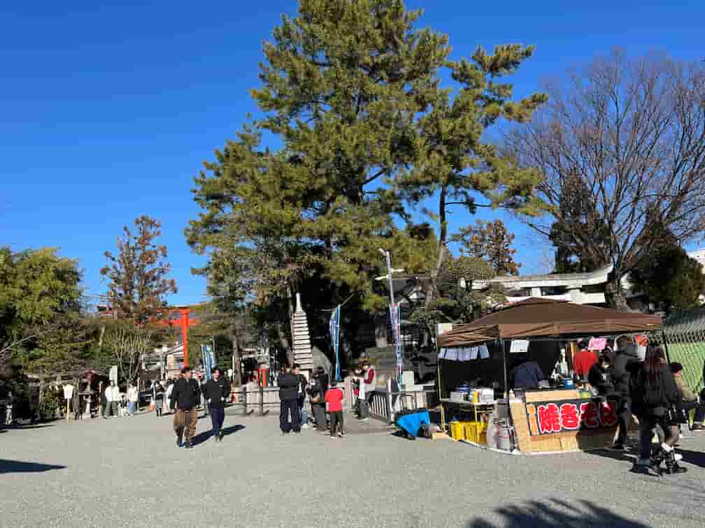
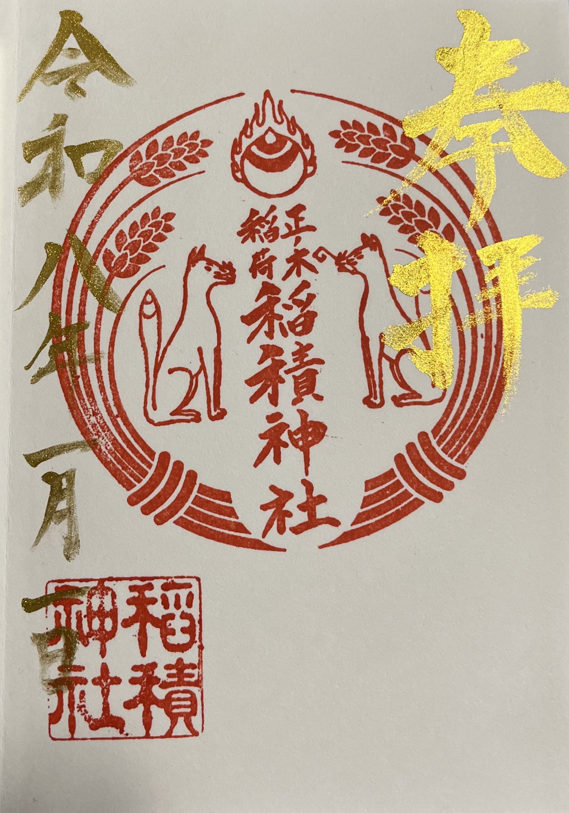

【2026山梨初詣】武田神社は徒歩30分!?
稲積神社の訪問記録と混雑状態のリアルレポート
☆武田神社☆
新年を迎える瞬間を武田神社で過ごすため、0時前を目指して向かいました。元旦は大規模な交通規制が敷かれており、車での接近は困難。今回は甲府駅近くの特設駐車場から徒歩で向かいました。緩やかな登り坂を歩くこと約30分！めちゃくちゃ寒く、防寒対策をしていても震えるほどでした。
現地に到着すると、鳥居の前には溢れんばかりの人だかり…武田神社前にある橋の前に何列にも折り返しながら並んでいる行列がありお参りまで約30分ほど並びましたが、5〜6列での参拝となっており、人数のわりに効率は非常に良く感じました。


★後日談★
実は1月12日に東京から友達が訪れて山梨の観光案内を行う機会があり再度訪れました。まだ初詣と謳っている期間で人の数は通常時に比べ多かったです。しかし交通規制がなくなっており駐車場が境内、目の前が空いており止めることが出来ました。すぐに止められたかというと約3台程度の待ちで駐車が出来ました。三が日は規制が強いため絶対に三が日がいい！という方以外は規制が緩くなってからをおすすめしたいです。寒い中の片道30分は精神的に堪えました…笑
アクセス情報
- 所在地：甲府市古府中町2611
- アクセス：甲府駅より徒歩30分（元旦交通規制あり）
- 駐車場：規制により神社前利用不可（特設駐車場利用）
- 滞在時間:1時間10分
- 公式サイトはこちらをクリック
☆正ノ木稲荷・稲積神社☆
お昼には「正ノ木さん」として親しまれる稲積神社へ。遊亀公園の駐車場に駐車しましたが、現在は附属動物園の建設により駐車場がかなり狭くなっていました。定期的に工事区画が変わっているため、訪れる際は要確認してほしいと感じました。
参拝列は2〜3列で、人数は武田神社の0時に比べて当たり前ですがとても少ないです。しかし、待ち時間は武田神社以上で、40分ほど並びました。そのため軽く行ってきてと考えている方には駐車場事情も相まって元旦は現在あまりおすすめしにくいかなと感じました。しかし凄く明るい雰囲気で遊亀公園付属の動物園が工事終了も比較的近いため動物園に行きつつとなると子連れの方々には特におすすめしたいと感じました！
個人的にはとても好きな神社で過去に何度も訪れていることもありぜひ行ってほしいと思っています笑



アクセス情報
- 所在地：甲府市太田町10-2
- アクセス：甲府駅より車で10分（遊亀公園隣接）
- 駐車場：遊亀公園駐車場（動物園工事のため制限あり・要確認）
- 滞在時間:1時間20分
- 公式サイトはこちらをクリック
☆御朱印の記録☆
両社で御朱印を頂きました。
武田神社は通常の御朱印でしたが、稲積神社はお正月限定の御朱印を拝受しました。

☆まとめ☆
深夜の厳しい寒さの中歩いた武田神社、そして駐車と待ち時間に苦労した稲積神社。どちらも山梨の正月らしい賑わいでとても楽しかったです。稲積神社の御朱印はとても綺麗で並んだ甲斐がありました！
前の記事へ ← ホームへ戻る 次の記事へ